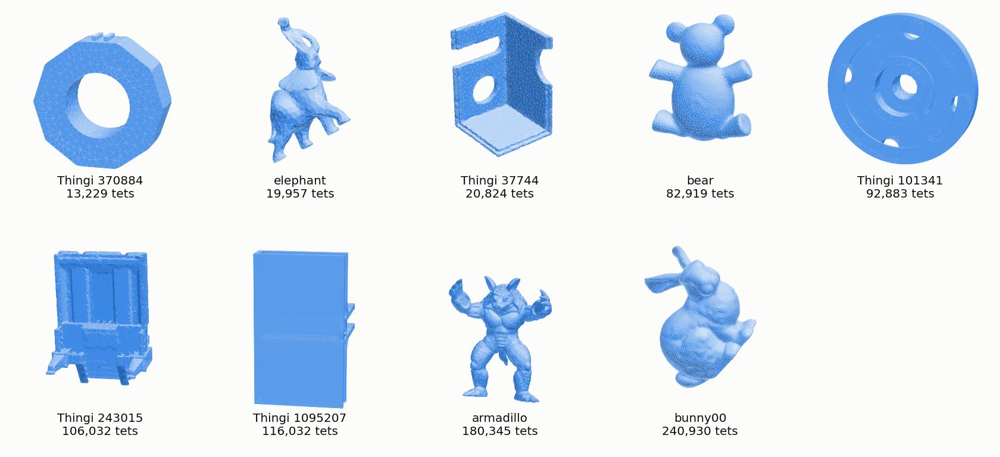
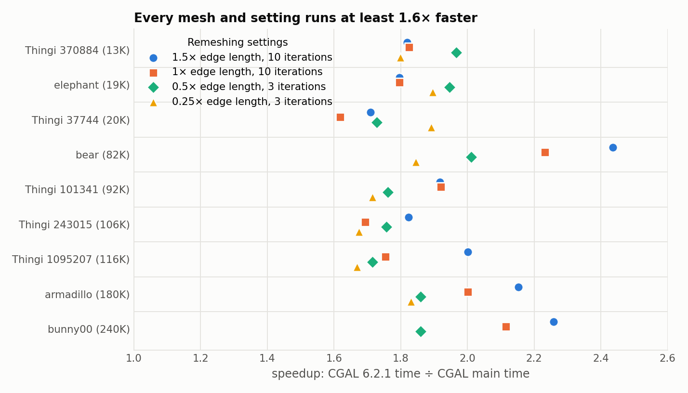
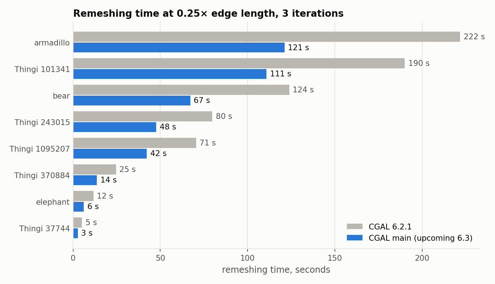

Iason Manolas (GSoC 2026), Jane Tournois
GeometryFactory
In the upcoming CGAL 6.3, the
Tetrahedral Remeshing package runs
about 1.9× faster than in CGAL 6.2.1 (1.6× to 2.4×, depending on the mesh and settings). It
executes 58% fewer CPU instructions, and peak memory drops by about 8% on average. No change in
user code is needed: existing calls to tetrahedral_isotropic_remeshing() simply run faster.
Tetrahedral Remeshing
tetrahedral_isotropic_remeshing() improves the quality of a multi-material tetrahedral mesh by
repeatedly applying four local operations: edge split, edge collapse, edge flip and vertex
smoothing. Each pass improves badly shaped cells and moves the mesh towards a target edge length.
On meshes with millions of cells, this can take many minutes.
Benchmarks
We compared CGAL 6.2.1 with the current main branch on nine volume meshes generated with
make_mesh_3, including models from the Thingi10K
dataset. Each mesh was remeshed with four combinations of target edge length, relative to the
input's average edge length, and number of iterations. These range from coarsening to producing
meshes of more than 3 million cells.


The nine input meshes.
The remeshing time drops by 1.87× on average (geometric mean over the 35 runs). The speedup is largest when coarsening, 1.98× at 1.5× the average edge length, and still 1.79× when refining to 0.25×.


Speedup per mesh and setting. Input cell counts are in parentheses.


Remeshing time at 0.25× edge length and 3 iterations, the most demanding setting (bunny00 not run, see below). The longest run, armadillo, goes from 222 s to 121 s.
How this was measured. CGAL 6.2.1 (28811b6)
against main (a3c1b86, November 2026). Release
build (Apple clang 21, -O3), Apple M2, one thread. Each mesh and setting ran twice per version
in before/after/after/before order, and the charts show the mean. The time covers only the call to
tetrahedral_isotropic_remeshing(). Results will differ on other hardware and compilers, and
bunny00 was not run at 0.25× because of this machine's memory.
Where the speedup comes from
Nearly all of the reduction comes from seven pull requests, found by profiling with Intel VTune and
perf; other changes since 6.2.1 move the instruction count by less than 1%. Most of the savings
come from not doing work whose answer was already known. Each pull request's description has the
details and its own measurements.
- #9587: decide most collapse candidates with a direct dihedral-angle test, before copying their star into a scratch triangulation.
- #9591: replace repeated point-location, star and sizing-field queries with information already at hand.
- #9590: collect the stars of a collapsed edge's endpoints once, instead of up to four times.
- #9594: replace hash containers that hold about 20 elements at most with small inline vectors.
- #9592: stop evaluating a flip as soon as its angles can no longer improve on the current ones.
- #9588: run a flip's cheap checks before its expensive star walks.
- #9676: judge a flip's facets as they are visited, and run its most expensive test only on candidates whose angles pass.
Mesh quality
These optimizations do not change the remesher's decisions. On the nine meshes we compared at 1× edge length and 10 iterations, the output is byte-identical with and without these pull requests.
Other changes merged since 6.2.1 do change the output slightly, so 6.2.1 and 6.3 do not produce identical files. The quality is equivalent: across the 35 runs, the mean dihedral angle differs by at most 0.08°, and the number of output cells by at most 2.2% (in 26 of the 35 runs, by less than 0.1%). The minimum dihedral angle stays the same in most runs and moves by up to 2° in either direction in the others.
Status
All these improvements are already integrated in CGAL's main branch on the CGAL GitHub repository, and will be officially released in CGAL 6.3.
This work was done by Iason Manolas during Google Summer of Code 2026, mentored by Sébastien Loriot, Mael Rouxel-Labbé and Jane Tournois.
Documentation about Tetrahedral Remeshing
CGAL GitHub repository
GSoC 2026 final report